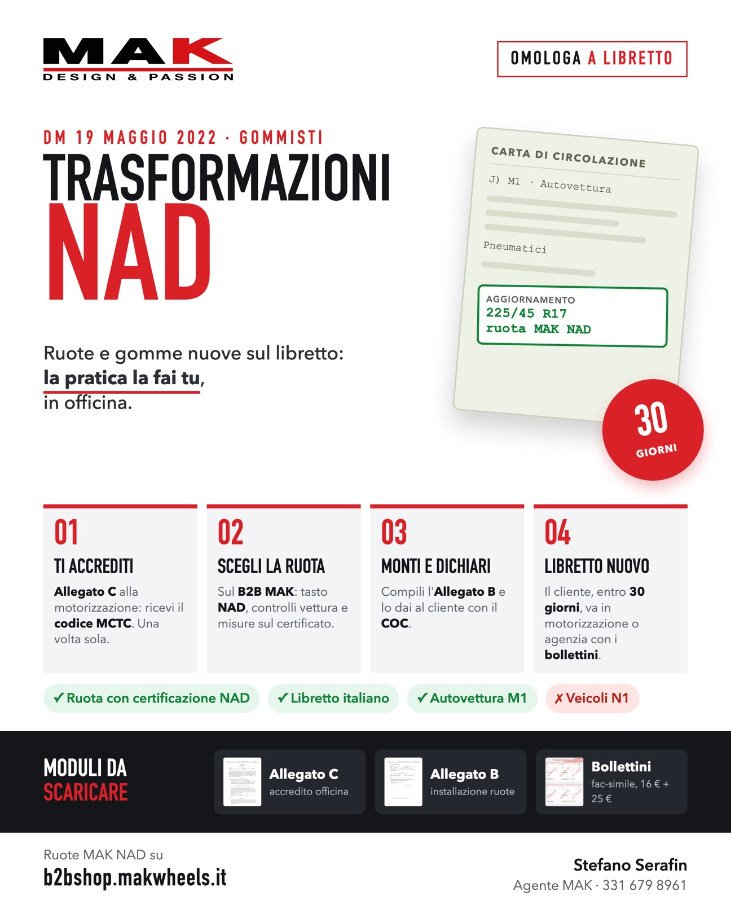
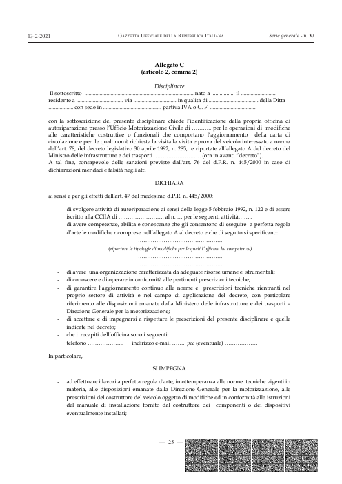
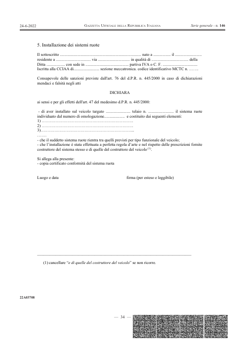
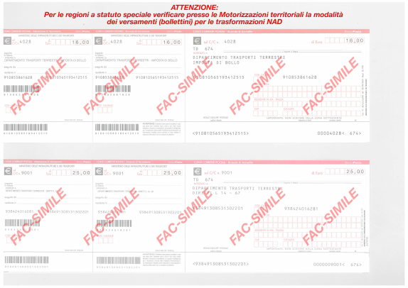

Dipende dalla misura del pneumatico che vuoi montare.
Controlla i requisiti della vettura e della ruota.
Presenti l'Allegato C (disciplinare) alla tua motorizzazione, con copia del documento d'identità. Ricevi il codice identificativo MCTC, da scrivere su ogni dichiarazione.
Con il libretto sotto mano cerchi la vettura sul B2B MAK.
Sul prodotto tocchi il tasto NAD: si apre il certificato. Trovi la vettura e controlli che combacino:
Ordini le quattro ruote MAK e monti una delle misure ammesse: a libretto se ne trascrive una sola. Indice di carico e velocità uguali o superiori a quelli del libretto.
Ordini le quattro ruote MAK con la misura già a libretto e le monti.
Compili l'Allegato B (dichiarazione di installazione) e lo dai al cliente con il COC (la parte sinistra) e copia del certificato di conformità.
Dai al cliente il COC (la parte sinistra; la destra resta a te) e la Dichiarazione di corretto montaggio (Allegato E), che scarichi dalla sezione «Conformità» del B2B. Il cliente li tiene in auto per i controlli.
Entro 30 giorni va in motorizzazione o in agenzia di pratiche auto con l'Allegato B, il COC e i due bollettini: esce con l'etichetta o il libretto ristampato.
PDF ufficiali, pronti da stampare.



Bollettini intestati al Dipartimento Trasporti Terrestri. Nelle regioni a statuto speciale verifica le modalità con la motorizzazione. Importi del fac-simile: controllali prima del versamento.
Dimmi vettura e misura: ti indico la ruota MAK NAD giusta.